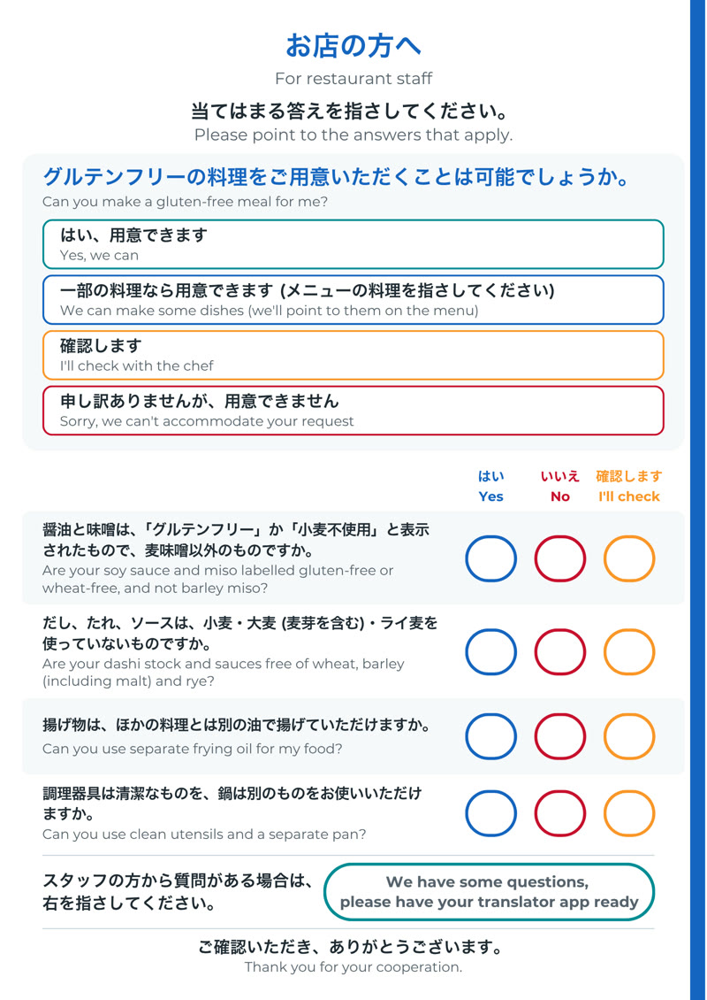

For groups of up to six where someone eats gluten-free or has coeliac (celiac) disease. I read each restaurant's official information before the day. On the day, I ask the staff how the food is prepared and guide you in English.
These are the steps I followed for a gluten-free food walk in Tokyo on 8 November 2026. I'll plan your group's tour the same way.
Before the tour, I ask about your dietary needs and the food you like. Please tell me in your first enquiry, so I have time to research restaurants before the tour.
I read each restaurant's official website or booking page. I look for gluten-free certification and anything it says about cross-contamination.
I don't book lunch ahead. I list three options in the itinerary, and we choose one together on the day.
On the day, I hand you a printed itinerary with the route, each stop's address and what to bring. You'll also get a Japanese and English card to show restaurant staff.
After the 8 November tour, I put together a guide to my guests' next stops: Kanazawa, Kyoto and Osaka.
Before the day, I read each restaurant's official information. When we're at the restaurant, I ask the staff how your meal is prepared.
The card asks whether they can fry your food in separate oil. It also asks whether their soy sauce and miso are labelled gluten-free or wheat-free. It asks about barley in the miso too.
I can't see inside the kitchen, and I can't test food for trace amounts of gluten. So I can't guarantee any meal is safe for you, or that there's no cross-contamination. What you eat is always your decision.
For food allergies other than gluten, I'll check with the restaurants if you ask me to. I can't guarantee those meals either.
I plan the day and guide you through it. I don't book trains, hotels, entry tickets or restaurant tables for you.
We get around by train, bus and on foot, and I don't drive guests.
For the 8 November walk, I made a card in Japanese and English for restaurant staff. The back of the card, shown here, asks about soy sauce, miso, dashi, frying oil and pans.
Staff answer each question by pointing to Yes, No or I'll check. Each question is phrased so that Yes is the answer that suits a gluten-free diet.

On 8 November 2026, I guided a gluten-free food walk in Tokyo for two guests. It was the first time I'd planned a tour around gluten-free food.
We had such a wonderful day exploring Tokyo with Sho! He was friendly, engaging, informative, and always polite and thoughtful. He shared insights and pointed out things we would have easily missed on our own, making the day so much more meaningful. Best of all, we felt as though we'd made a new friend. We're so glad we had the chance to spend the day with him and would highly recommend Sho to anyone looking for a memorable, personal experience in Tokyo!
There's one price for your group of up to six, and quotes are free. I can quote in USD, CAD, AUD, NZD, GBP or EUR (other currencies in USD).
Your dates, your group size and a line about the gluten-free needs are enough for me to start. Please book at least two weeks before the tour. That gives me time to research restaurants.
Ask for a free quote →